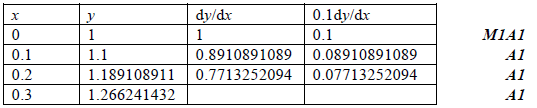
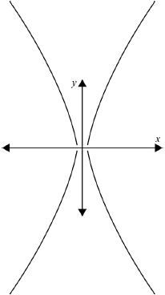
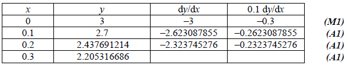

SL Paper 2
(i) Show that \(\frac{{\rm{d}}}{{{\rm{d}}\theta }}(\sec \theta \tan \theta + \ln (\sec \theta + \tan \theta )) = 2{\sec ^3}\theta \) .
(ii) Hence write down \(\int {{{\sec }^3}\theta {\rm{d}}\theta } \) .
Consider the differential equation \((1 + {x^2})\frac{{{\rm{d}}y}}{{{\rm{d}}x}} + xy = 1 + {x^2}\) given that \(y = 1\) when \(x = 0\) .
(i) Use Euler’s method with a step length of \(0.1\) to find an approximate value for y when \(x = 0.3\) .
(ii) Find an integrating factor for determining the exact solution of the differential equation.
(iii) Find the solution of the equation in the form \(y = f(x)\) .
(iv) To how many significant figures does the approximation found in part (i) agree with the exact value of \(y\) when \(x = 0.3\) ?
Markscheme
(i) \(\frac{{\rm{d}}}{{{\rm{d}}\theta }}(\sec \theta \tan \theta + \ln (\sec \theta + \tan \theta ))\)
\( = {\sec ^3}\theta + \sec \theta {\tan ^2}\theta + \frac{{\sec \theta \tan \theta + {{\sec }^2}\theta }}{{\sec \theta + \tan \theta }}\) M1A1A1
Note: Award M1 for a valid attempt to differentiate either term.
\( = {\sec ^3}\theta + \sec \theta ({\sec ^2}\theta - 1) + \sec \theta \) A1
\( = 2{\sec ^3}\theta \) AG
(ii) \(\int {{{\sec }^3}\theta {\rm{d}}\theta } = \frac{1}{2}(\sec \theta \tan \theta + \ln (\sec \theta + \tan \theta ))( + C)\) A1
[5 marks]
(i) \(\frac{{{\rm{d}}y}}{{{\rm{d}}x}} = 1 - \frac{{xy}}{{1 + {x^2}}}\) A1

Note: Accept tabular values correct to 3 significant figures.
\(y \approx 1.27\) when \(x = 0.3\) A1
(ii) consider the equation in the form
\(\frac{{{\rm{d}}y}}{{{\rm{d}}x}} + \frac{{xy}}{{1 + {x^2}}} = 1\) (M1)
the integrating factor I is given by
\(I = \exp \int {\left( {\frac{x}{{1 + {x^2}}}} \right)} {\rm{d}}x\) A1
\( = \exp \left( {\frac{1}{2}\ln (1 + {x^2})} \right)\) A1
\( = \sqrt {1 + {x^2}} \) A1
Note: Accept also the fact that the integrating factor for the original equation is \(\frac{1}{{\sqrt {1 + {x^2}} }}\) .
(iii) consider the equation in the form
\(\sqrt {1 + {x^2}} \frac{{{\rm{d}}y}}{{{\rm{d}}x}} + \frac{{xy}}{{\sqrt {1 + {x^2}} }} = \sqrt {1 + {x^2}} \) (M1)
integrating,
\(y\sqrt {1 + {x^2}} = \int {\sqrt {1 + {x^2}} {\rm{d}}x} \) A1
to integrate the right hand side, put \(x = \tan \theta \) , \({\rm{d}}x = {\sec ^2}\theta {\rm{d}}\theta \) M1A1
\(\int {\sqrt {1 + {x^2}} } {\rm{d}}x = \int {\sqrt {1 + {{\tan }^2}\theta } } .{\sec ^2}\theta {\rm{d}}\theta \) A1
\( = \int {{{\sec }^3}\theta {\rm{d}}\theta } \) A1
\( = \frac{1}{2}(\sec \theta \tan \theta + \ln (\sec \theta + \tan \theta ))\)
\( = \frac{1}{2}\left( {x\sqrt {1 + {x^2}} + \ln (x + \sqrt {1 + {x^2}} )} \right)\) A1
the solution to the differential equation is therefore
\(y\sqrt {1 + {x^2}} = \frac{1}{2}\left( {x\sqrt {1 + {x^2}} + \ln \left( {x + \sqrt {1 + {x^2}} } \right)} \right) + C\) A1
Note: Do not penalize the omission of C at this stage.
\(y = 1\) when \(x = 0\) gives \(C = 1\) M1A1
the solution is \(y = \frac{1}{{2\sqrt {1 + {x^2}} }}\left( {x\sqrt {1 + {x^2}} + \ln \left( {x + \sqrt {1 + {x^2}} } \right)} \right) + \frac{1}{{\sqrt {1 + {x^2}} }}\) A1
(iv) when \(x = 0.3\) , \(y = 1.249 \ldots \) A1
the approximation is only correct to 1 significant figure A1
[24 marks]
Examiners report
Most candidates managed to solve (a) successfully although some solutions required a page or more to complete with candidates rewriting \(\sec \theta \) and \(\tan \theta \) in terms of \(\sin \theta \) and \(\cos \theta \) which increased the complexity of the problem and sometimes led to algebraic errors.
Most candidates made a good attempt at (b) (i), those candidates who gave their solution in tabular form being most successful. In (b)(ii), most candidates found the correct integrating factor but many were unable to solve the differential equation in (b)(iii) with some failing to see that the result in (a) was intended as a hint for an appropriate substitution.
(i) Show that the improper integral \(\int_0^\infty {\frac{1}{{{x^2} + 1}}} {\rm{d}}x\) is convergent.
(ii) Use the integral test to deduce that the series \(\sum\limits_{n = 0}^\infty {\frac{1}{{{n^2} + 1}}} \) is convergent, giving reasons why this test can be applied.
(i) Show that the series \(\sum\limits_{n = 0}^\infty {\frac{{{{( - 1)}^n}}}{{{n^2} + 1}}} \) is convergent.
(ii) If the sum of the above series is \(S\), show that \(\frac{3}{5} < S < \frac{2}{3}\) .
For the series \(\sum\limits_{n = 0}^\infty {\frac{{{x^n}}}{{{n^2} + 1}}} \)
(i) determine the radius of convergence;
(ii) determine the interval of convergence using your answers to (b) and (c).
Markscheme
(i) consider \(\int_0^R {\frac{1}{{{x^2} + 1}}} {\rm{d}}x\) M1
\( = \left[ {\arctan (x)} \right]_0^R = \arctan (R)\) A1
\(\mathop {\lim }\limits_{R \to \infty } \arctan (R) = \frac{\pi }{2}\) (a finite number) R1
hence the improper integral is convergent AG
(ii) the terms of the series are positive A1
the terms are decreasing A1
the terms tend to zero A1
by the integral test, the series converges AG
[6 marks]
(i) the absolute values of the terms are monotonically decreasing A1
to zero A1
the series converges by the alternating series test R1AG
Note: Accept absolute convergence, with reference to part (b)(ii) \( \Rightarrow \) convergence.
(ii) statement that successive partial sums bound the total sum R1
\(S > \frac{1}{1} - \frac{1}{2} + \frac{1}{5} - \frac{1}{{10}} = \frac{3}{5}\) A1
\(S < \frac{1}{1} - \frac{1}{2} + \frac{1}{5} - \frac{1}{{10}} + \frac{1}{{17}} = 0.6588\) A1
\(S < 0.6588 < \frac{2}{3}\) AG
[6 marks]
(i) consider \(\left| {\frac{{\frac{{{x^{n + 1}}}}{{{{(n + 1)}^2} + 1}}}}{{\frac{{{x^n}}}{{{n^2} + 1}}}}} \right|\) M1
\( = \left| {\frac{{x({n^2} + 1)}}{{{{(n + 1)}^2} + 1}}} \right|\) A1
\( \to \left| x \right|\) as \(n \to \infty \) A1
therefore radius of convergence \( = 1\) A1
(ii) interval of convergence \( = \left[ { - 1,1} \right]\) A1A1
Note: A1 for [\( - 1\), and A1 for \(1\)].
[6 marks]
Examiners report
Although the various parts of this question were algebraically uncomplicated, many candidates revealed their lack of understanding of the necessary rigour required in the analysis of limits, improper integrals and the testing of series for convergence. In (b)(i), the upper limit in the integral was often taken as infinity, without any mention of an underlying limiting process.
Although the various parts of this question were algebraically uncomplicated, many candidates revealed their lack of understanding of the necessary rigour required in the analysis of limits, improper integrals and the testing of series for convergence.
Although the various parts of this question were algebraically uncomplicated, many candidates revealed their lack of understanding of the necessary rigour required in the analysis of limits, improper integrals and the testing of series for convergence. Many candidates were more confident with part (d) than with the other parts of the question.
Consider the differential equation
\(\frac{{{\text{d}}y}}{{{\text{d}}x}} + y\tan x = 2{\sec ^2}x,{\text{ }}0 \leqslant x < \frac{\pi }{2}\), given that \(y = 1\) when \(x = 0\).
By considering integration as the reverse of differentiation, show that for
\(0 \leqslant x < \frac{\pi }{2}\)
\[\int {\sec x{\text{d}}x = \ln (\sec x + \tan x) + C.} \]
Hence, using integration by parts, show that
\[\int {{{\sec }^3}x{\text{d}}x = \frac{1}{2}\left( {\sec x\tan x + \ln (\sec x + \tan x)} \right) + C.} \]
Find an integrating factor and hence solve the differential equation, giving your answer in the form \(y = f(x)\).
Starting with the differential equation, show that
\[\frac{{{{\text{d}}^2}y}}{{{\text{d}}{x^2}}} + y = 2{\sec ^2}x\tan x.\]
Hence, by using your calculator to draw two appropriate graphs or otherwise, find the \(x\)-coordinate of the point of inflection on the graph of \(y = f(x)\).
Markscheme
\(\frac{{\text{d}}}{{{\text{d}}x}}\left( {\ln (\sec x + \tan x)} \right) = \frac{{\sec x\tan x + {{\sec }^2}x}}{{\sec x + \tan x}}\) M1
\( = \sec x\) A1
therefore \(\int {\sec x{\text{d}}x = \ln (\sec x + \tan x) + C} \) AG
[4 marks]
\(\int {{{\sec }^3}x{\text{d}}x = \int {\sec x \times {{\sec }^2}x{\text{d}}x} } \) M1
\( = \sec x\tan x - \int {\sec x{{\tan }^2}x{\text{d}}x} \) A1A1
\( = \sec x\tan x - \int {\sec x({{\sec }^2}x - 1){\text{d}}x} \) A1
\( = \sec x\tan x - \int {{{\sec }^3}x{\text{d}}x + \int {\sec x{\text{d}}x} } \)
\( = \sec x\tan x - \int {{{\sec }^3}x{\text{d}}x + \ln (\sec x + \tan x)} \) A1
\(2\int {{{\sec }^3}x{\text{d}}x = \left( {\sec x\tan x + \ln (\sec x + \tan x)} \right)} \) A1
therefore
\(\int {{{\sec }^3}x{\text{d}}x = \frac{1}{2}\left( {\sec x\tan x + \ln (\sec x + \tan x)} \right) + C} \) AG
[4 marks]
\({\text{int factor}} = {{\text{e}}^{\int {\tan x{\text{d}}x} }}\) (M1)
\( = {{\text{e}}^{\ln \sec x}}\) (A1)
\( = \sec x\) A1
the differential equation can be written as
\(\frac{{\text{d}}}{{{\text{d}}x}}(y\sec x) = 2{\sec ^3}x\) M1A1
integrating,
\(y\sec x = \sec x\tan x + \ln (\sec x + \tan x) + C\) A1
putting \(x = 0,{\text{ }}y = 1,\) M1
\(C = 1\) A1
the solution is \(y = \cos x\left( {\sec x\tan x + \ln (\sec x + \tan x) + 1} \right)\) A1
[??? marks]
differentiating the differential equation,
\(\frac{{{{\text{d}}^2}y}}{{{\text{d}}{x^2}}} + \frac{{{\text{d}}y}}{{{\text{d}}x}}\tan x + y{\sec ^2}x = 4{\sec ^2}x\tan x\) A1A1
\(\frac{{{{\text{d}}^2}y}}{{{\text{d}}{x^2}}} + (2{\sec ^2}x - y\tan x)\tan x + y{\sec ^2}x = 4{\sec ^2}x\tan x\) A1
\(\frac{{{{\text{d}}^2}y}}{{{\text{d}}{x^2}}} + y = 2{\sec ^2}x\tan x\) AG
[??? marks]
at a point of inflection, \(\frac{{{{\text{d}}^2}y}}{{{\text{d}}{x^2}}} = 0\) so \(y = 2{\sec ^2}x\tan x\) (M1)
therefore the point of inflection can be found as the point of intersection of the graphs of \(y = \cos x\left( {\sec x\tan x + \ln (\sec x + \tan x) + 1} \right)\)
and \(y = 2{\sec ^2}x\tan x\) (M1)
drawing these graphs on the calculator, \(x = 0.605\) A2
[??? marks]
Examiners report
Consider the differential equation \(\frac{{{\text{d}}y}}{{{\text{d}}x}} = 2x + y - 1\) with boundary condition \(y = 1\) when \(x = 0\).
Using Euler’s method with increments of \(0.2\), find an approximate value for \(y\) when \(x = 1\).
Explain how Euler’s method could be improved to provide a better approximation.
Solve the differential equation to find an exact value for \(y\) when \(x = 1\).
(i) Find the first three non-zero terms of the Maclaurin series for \(y\).
(ii) Hence find an approximate value for \(y\) when \(x = 1\).
Markscheme
 (M1)(A1)(A1)(A1)
(M1)(A1)(A1)(A1)
Note: Award M1 for equivalent of setting up first row of table, A1 for each of row 2, 3 and 5.
approximate solution \(y = 1.98\) A1
make the increments smaller or any specific correct instruction – for example change increment from \(0.2\) to \(0.1\) A1
\(\frac{{{\text{d}}y}}{{{\text{d}}x}} - y = 2x - 1\)
integrating factor is \({{\text{e}}^{\int { - 1{\text{d}}x} }} = {{\text{e}}^{ - x}}\) (M1)(A1)
\(\frac{{\text{d}}}{{{\text{d}}x}}(y{{\text{e}}^{ - x}}) = {{\text{e}}^{ - x}}(2x - 1)\) M1
attempt at integration by parts of \(\int {{{\text{e}}^{ - x}}(2x - 1){\text{d}}x} \) (M1)
\( = - (2x - 1){{\text{e}}^{ - x}} + \int {2{{\text{e}}^{ - x}}{\text{d}}x} \) A1
\( = - (2x - 1){{\text{e}}^{ - x}} - 2{{\text{e}}^{ - x}}( + c)\) A1
\(y{{\text{e}}^{ - x}} = - (1 + 2x){{\text{e}}^{ - x}} + c\)
\(y = - (1 + 2x) + c{{\text{e}}^x}\)
when \(x = 0,{\text{ }}y = 1 \Rightarrow c = 2\) M1
\(y = - (1 + 2x) + 2{{\text{e}}^{ - x}}\) A1
when \(x = 1,{\text{ }}y = - 3 + 2{\text{e}}\) A1
(i) METHOD 1
\(f(0) = 1,{\text{ }}f'(0) = 0\) A1
\(\frac{{{{\text{d}}^2}y}}{{{\text{d}}{x^2}}} = 2 + \frac{{{\text{d}}y}}{{{\text{d}}x}} \Rightarrow {f^2}(0) = 2\) A1
\(\frac{{{{\text{d}}^3}y}}{{{\text{d}}{x^3}}} = \frac{{{{\text{d}}^2}y}}{{{\text{d}}{x^2}}} \Rightarrow {f^3}(0) = 2\) A1
hence \(y = 1 + {x^2} + \frac{{{x^3}}}{3} + \ldots \) A1
Note: Accuracy marks are independent of each other.
METHOD 2
using Maclaurin series for \({{\text{e}}^x} = 1 + x + \frac{{{x^2}}}{{2!}} + \frac{{{x^3}}}{{3!}} + \ldots \) M1
\(y = - 1 - 2x + 2\left( {1 + x + \frac{{{x^2}}}{{2!}} + \frac{{{x^3}}}{{3!}} + \ldots } \right)\) M1A1
\(y = 1 + {x^2} + \frac{{{x^3}}}{3} + \ldots \) A1
(ii) when \(x = 1,{\text{ }}y = 1 + 1 + \frac{1}{3} = \frac{7}{3} = 2.33\) A1
Examiners report
Most candidates were successful in applying Euler’s method and in explaining how it could be improved to provide a better approximation.
Most candidates were successful in applying Euler’s method and in explaining how it could be improved to provide a better approximation.
In part c) many candidates successfully used an integrating factor to solve the differential equation but a significant minority were unable to make a meaningful start.
Part d) produced many fully correct answers, but candidates sometimes used their own answers to part c) to derive the Maclaurin series rather than the given equation. In most cases this did not cause a problem but a small number of candidates produced an expression of such complexity that they were unable to differentiate to the required number of terms.
The function \(f(x)\) is defined by the series \(f(x) = 1 + \frac{{(x + 2)}}{{3 \times 1}} + \frac{{{{(x + 2)}^2}}}{{{3^2} \times 2}} + \frac{{{{(x + 2)}^3}}}{{{3^3} \times 3}} + \ldots \) .
Write down the general term.
Find the interval of convergence.
Solve the differential equation \((u + 3{v^3})\frac{{{\rm{d}}v}}{{{\rm{d}}u}} = 2v\) , giving your answer in the form \(u = f(v)\) .
Markscheme
the general term is \(\frac{{{{(x + 2)}^n}}}{{{3^n}n}}\) A1
[1 mark]
\(\mathop {\lim }\limits_{n \to \infty } \left( {\frac{{{a_{n + 1}}}}{{{a_n}}}} \right) = \mathop {\lim }\limits_{n \to \infty } \left[ {\frac{{{{(x + 2)}^{n + 1}}}}{{{3^{n + 1}}(n + 1)}} \times \frac{{{3^n}n}}{{{{(x + 2)}^n}}}} \right]\) M1A1A1
\( = \mathop {\lim }\limits_{n \to \infty } \left[ {\frac{{(x + 2){n^{}}}}{{3(n + 1)}}} \right]\) A1
\( = \frac{{(x + 2)}}{3}\) since \( = \mathop {\lim }\limits_{n \to \infty } \left[ {\frac{{{n^{}}}}{{n + 1}}} \right] = 1\) A1R1
the series is convergent if \(\left| {\frac{{(x + 2)}}{3}} \right| < 1\) R1
then \( - 3 < x + 2 < 3 \Rightarrow - 5 < x < 1\) A1
if \(x = - 5\) , series is \(1 - 1 + \frac{1}{2} - \frac{1}{3} + \ldots + \frac{{{{( - 1)}^n}}}{n} + \ldots \) which converges M1A1
if \(x = 1\) , series is \(1 + 1 + \frac{1}{2} + \frac{1}{3} + \ldots + \frac{1}{n} + \ldots \) which diverges M1A1
the interval of convergence is \( - 5 \le x < 1\) A1
[13 marks]
\((u + 3{v^3})\frac{{{\rm{d}}v}}{{{\rm{d}}u}} = 2v\)
\(\frac{{{\rm{d}}u}}{{{\rm{d}}v}} = \frac{{(u + 3{v^3})}}{{2v}} = \frac{u}{{2v}} + \frac{{3{v^2}}}{2}\) M1A1
\(\frac{{{\rm{d}}u}}{{{\rm{d}}v}} - \frac{u}{{2v}} = \frac{{3{v^2}}}{2}\) A1
IF is \({{\rm{e}}^{\int {\frac{1}{{2v}}} {\rm{d}}v}} = {{\rm{e}}^{\frac{1}{2}\ln v}}\) M1
\( = {v^{\frac{1}{2}}}\) A1
\(\frac{u}{{\sqrt v }} = \int {\frac{{3{v^{\frac{3}{2}}}}}{2}} {\rm{d}}v\) M1
\( = \frac{3}{5}{v^{\frac{5}{2}}} + c\) A1
\(u = \frac{3}{5}{v^3} + c\sqrt v \) A1
[8 marks]
Examiners report
In (a) the general term was usually found.
Part (b) was completed mostly except for testing the ends of the interval of convergence.
A surprising number of candidates started off their solution by saying "let \(x = u\) and \(y = v\) " as if the world suddenly changed when \(x\) and \(y\) were not being used in a differential equation. Some also after seeing \(u\) and \(v\) thought they had a homogeneous equation and got lost in a maze of algebra that lead nowhere. Find \(\frac{{{\rm{d}}u}}{{{\rm{d}}v}}\) by inverting the given expression was also something that only the best candidates were able to do.
The function \(f\) is defined by \(f(x) = \ln (1 + \sin x)\) .
When a scientist measures the concentration \(\mu \) of a solution, the measurement obtained may be assumed to be a normally distributed random variable with mean \(\mu \) and standard deviation \(1.6\).
Show that \(f''(x) = \frac{{ - 1}}{{1 + \sin x}}\) .
Determine the Maclaurin series for \(f(x)\) as far as the term in \({x^4}\) .
Deduce the Maclaurin series for \(\ln (1 - \sin x)\) as far as the term in \({x^4}\) .
By combining your two series, show that \(\ln \sec x = \frac{{{x^2}}}{2} + \frac{{{x^4}}}{{12}} + \ldots \) .
Hence, or otherwise, find \(\mathop {\lim }\limits_{x \to 0} \frac{{\ln \sec x}}{{x\sqrt x }}\) .
He makes 5 independent measurements of the concentration of a particular solution and correctly calculates the following confidence interval for \(\mu \) .
[\(22.7\) , \(26.1\)]
Determine the confidence level of this interval.
He is now given a different solution and is asked to determine a \(95\%\) confidence interval for its concentration. The confidence interval is required to have a width less than \(2\). Find the minimum number of independent measurements required.
Markscheme
\(f'(x) = \frac{{\cos x}}{{1 + \sin x}}\) M1A1
\(f''(x) = \frac{{ - \sin x(1 + \sin x) - {{\cos }^2}x}}{{{{(1 + \sin x)}^2}}}\) M1
\( = \frac{{ - \sin x - 1}}{{{{(1 + \sin x)}^2}}}\) A1
\( = \frac{{ - 1}}{{1 + \sin x}}\) AG
[4 marks]
\(f'''(x) = \frac{{\cos x}}{{{{(1 + \sin x)}^2}}}\) A1
\({f^{iv}}(x) = \frac{{ - \sin x{{(1 + \sin x)}^2} - 2(1 + \sin x){{\cos }^2}x}}{{{{(1 + \sin x)}^4}}}\) A1
\(f(0) = 0\) , \(f'(0) = 1\) , \(f''(0) = - 1\) , \(f'''(0) = 1\) , \({f^{iv}}(0) = - 2\) (A2)
Note: Award A1 for 2 errors and A0 for more than 2 errors.
\(\ln (1 + \sin x) = x - \frac{{{x^2}}}{2} + \frac{{{x^3}}}{6} - \frac{{{x^4}}}{{12}} + \ldots \) M1A1
[6 marks]
\(\ln (1 - \sin x) = \ln (1 + \sin ( - x)) = - x - \frac{{{x^2}}}{2} - \frac{{{x^3}}}{6} - \frac{{{x^4}}}{{12}} + \ldots \) M1A1
[2 marks]
Adding, M1
\(\ln (1 - {\sin ^2}x) = \ln {\cos ^2}x\) A1
\( = - {x^2} - \frac{{{x^4}}}{6} + \ldots \) A1
\(\ln \cos x = - \frac{{{x^2}}}{2} - \frac{{{x^4}}}{{12}} + \ldots \) A1
\(\ln \sec x = \frac{{{x^2}}}{2} + \frac{{{x^4}}}{{12}} + \ldots \) AG
[4 marks]
\(\frac{{\ln \sec x}}{{x\sqrt x }} = \frac{{\sqrt x }}{2} + \frac{{{x^2}\sqrt x }}{{12}} + \ldots \) M1
Limit \( = 0\) A1
[2 marks]
Interval width \( = 26.1 - 22.7 = 3.4\)
So \(3.4 = 2z \times \frac{{1.6}}{{\sqrt 5 }}\) M1A1
\(z = 2.375 \ldots \) A1
Probability \( = 0.9912\) A1
Confidence level \( = 2 \times 0.4912 = 98.2\% \) A1
[5 marks]
\(z\)-value \( = 1.96\) A1
We require
\(2 \times \frac{{1.96 \times 1.6}}{{\sqrt n }} < 2\) M1A1
Whence \(n > 9.83\) A1
So we need \(n = 10\) A1
Note: Accept \( = \) signs throughout.
[5 marks]
Examiners report
Let \({S_n} = \sum\limits_{k = 1}^n {\frac{1}{k}} \) .
Show that, for \(n \ge 2\) , \({S_{2n}} > {S_n} + \frac{1}{2}\) .
Deduce that \({S_{2m + 1}} > {S_2} + \frac{m}{2}\) .
Hence show that the sequence \(\left\{ {{S_n}} \right\}\) is divergent.
Markscheme
\({S_{2n}} = {S_n} + \frac{1}{{n + 1}} + \frac{1}{{n + 2}} + \ldots + \frac{1}{{2n}}\) M1
\( > {S_n} + \frac{1}{{2n}} + \frac{1}{{2n}} + \ldots + \frac{1}{{2n}}\) M1A1
\( = {S_n} + \frac{1}{2}\) AG
[3 marks]
Replacing \(n\) by \(2n\),
\({S_{4n}} > {S_{2n}} + \frac{1}{2}\) M1A1
\( > {S_n} + 1\) A1
Continuing this process,
\({S_{8n}} > {S_n} + \frac{3}{2}\) (A1)
In general,
\({S_{{2^m}n}} > {S_n} + \frac{m}{2}\) M1A1
Putting \(n = 2\) M1
\({S_{{2^{m + 1}}}} > {S_2} + \frac{m}{2}\) AG
[7 marks]
Consider the (large) number \(N\). M1
Then, \({S_{2m + 1}} > N\) if \({S_2} + \frac{m}{2} > N\) A1
i.e. if \(m > 2(N - {S_2})\) A1
This establishes the divergence. AG
[3 marks]
Examiners report
Consider the differential equation \(\frac{{{\text{d}}y}}{{{\text{d}}x}} = \frac{x}{y}\), where \(y \ne 0\).
Find the general solution of the differential equation, expressing your answer in the form \(f(x,{\text{ }}y) = c\), where \(c\) is a constant.
(i) Hence find the particular solution passing through the points \((1,{\rm{ \pm }}\sqrt 2 )\).
(ii) Sketch the graph of your solution and name the type of curve represented.
(i) Write down the particular solution passing through the points \((1,{\text{ }} \pm 1)\).
(ii) Give a geometrical interpretation of this solution in relation to part (b).
(i) Find the general solution of the differential equation \(\frac{{{\text{d}}y}}{{{\text{d}}x}} = \frac{x}{y} + \frac{y}{x}\), where \(xy \ne 0\).
(ii) Find the particular solution passing through the point \((1,{\text{ }}\sqrt 2 )\).
(iii) Sketch the particular solution.
(iv) The graph of the solution only contains points with \(\left| x \right| > a\).
Find the exact value of \(a,{\text{ }}a > 0\).
Markscheme
attempt to separate the variables M1
\(\int {y\frac{{{\text{d}}y}}{{{\text{d}}x}}{\text{d}}x = \int {x{\text{d}}x} } \) A1
Note: Accept \(\int {y{\text{d}}y = \int {x{\text{d}}x} } \).
obtain \(\frac{1}{2}{y^2} = \frac{1}{2}{x^2} + {\text{ constant }}( \Rightarrow {y^2} - {x^2} = c)\) A1
[3 marks]
(i) substitute the coordinates for both points M1
\({( \pm \sqrt 2 )^2} - {1^2} = 1\)
obtain \({y^2} - {x^2} = 1\) or equivalent A1
(ii)  A1A1
A1A1
Note: A1 for general shape including two branches and symmetry;
A1 for values of the intercepts.
(rectangular) hyperbola A1
[5 marks]
(i) \({y^2} - {x^2} = 0\) A1
(ii) the two straight lines \(y = \pm x\) A1
form the asymptotes to the hyperbola found above, or equivalent A1
[3 marks]
(i) the equation is homogeneous, so attempt to substitute \(y = vx\) M1
as a first step write \(\frac{{{\text{d}}y}}{{{\text{d}}x}} = x\frac{{{\text{d}}v}}{{{\text{d}}x}} + v\) (A1)
then \(x\frac{{{\text{d}}v}}{{{\text{d}}x}} + v = \frac{1}{v} + v\) A1
attempt to solve the resulting separable equation M1
\(\int {v{\text{d}}v = \int {\frac{1}{x}{\text{d}}x} } \) A1
obtain \(\frac{1}{2}{v^2} = \ln \left| x \right| + {\text{ constant}} \Rightarrow {y^2} = 2{x^2}\ln \left| x \right| + c{x^2}\) A1
(ii) substituting the coordinates (M1)
obtain \(c = 2 \Rightarrow {y^2} = 2{x^2}\ln \left| x \right| + 2{x^2}\) A1
(iii)  A1
(iv) since \({y^2} > 0\) and \({x^2} \ne 0\) R1
\(\ln \left| x \right| > - 1 \Rightarrow \left| x \right| > {{\text{e}}^{ - 1}}\) A1
\(a = {{\text{e}}^{ - 1}}\) A1
Note: The R1 may be awarded for a correct reason leading to subsequent correct work.
[12 marks]
Examiners report
Although (a), (b) and (c) were generally well done, it was rare to see a completely satisfactory geometrical answer to part (c)(ii). A few candidates solved the differential equation as a homogeneous equation.
Although (a), (b) and (c) were generally well done, it was rare to see a completely satisfactory geometrical answer to part (c)(ii). A few candidates solved the differential equation as a homogeneous equation.
Although (a), (b) and (c) were generally well done, it was rare to see a completely satisfactory geometrical answer to part (c)(ii). A few candidates solved the differential equation as a homogeneous equation.
For part (d) most candidates used the correct solution method for a homogeneous differential equation. A few found the algebra hard going in finding the particular solution. Most approaches to the final part were unsatisfactory, with a lack of proper consideration of the inequalities in the question.
Using a Taylor series, find a quadratic approximation for \(f(x) = \sin x\) centred about \(x = \frac{{3\pi }}{4}\).
When using this approximation to find angles between \(130^\circ\) and \(140^\circ\), find the maximum value of the Lagrange form of the error term.
Hence find the largest number of decimal places to which \(\sin x\) can be estimated for angles between \(130^\circ\) and \(140^\circ\).
Explain briefly why the same maximum value of error term occurs for \(g(x) = \cos x\) centred around \(\frac{\pi }{4}\) when finding approximations for angles between \(40^\circ\) and \(50^\circ\).
Markscheme
\(f(x) = \sin x,{\text{ }}f'(x) = \cos x,{\text{ }}{f^{(2)}}(x) = - \sin x\) M1
\(f\left( {\frac{{3\pi }}{4}} \right) = \frac{1}{{\sqrt 2 }},{\text{ }}f'\left( {\frac{{3\pi }}{4}} \right) = - \frac{1}{{\sqrt 2 }},{\text{ }}{f^{(2)}}\left( {\frac{{3\pi }}{4}} \right) = - \frac{1}{{\sqrt 2 }}\) A1
hence the quadratic Taylor Polynomial is
\(\frac{1}{{\sqrt 2 }} - \frac{1}{{\sqrt 2 }}\left( {x - \frac{{3\pi }}{4}} \right) - \frac{1}{{\sqrt 2 }}\frac{{{{\left( {x - \frac{{3\pi }}{4}} \right)}^2}}}{{2!}}\) M1A1
\(\left( {\frac{1}{{\sqrt 2 }}\left( {1 - \left( {x - \frac{{3\pi }}{4}} \right) - \frac{1}{2}{{\left( {x - \frac{{3\pi }}{4}} \right)}^2}} \right)} \right)\)
\(f(x) = \sin x,{\text{ }}{f^{(3)}}(x) = - \cos x\) (A1)
the Lagrange form of the error term is: \(\left| {{R_n}(x)} \right| \leqslant \frac{{{{\left| {x - a} \right|}^{n + 1}}}}{{(n + 1)!}}\max \left| {{f^{n + 1}}(k)} \right|\)
\(\left| {{R_2}(x)} \right| \leqslant \frac{{{{\left| {x - \frac{{3\pi }}{4}} \right|}^3}}}{{3!}}\max \left| {{f^3}(k)} \right|\) (M1)
\(\left| {{R_2}(x)} \right| \leqslant \frac{{{{\left| {x - \frac{{3\pi }}{4}} \right|}^3}}}{{3!}}\max \left| { - \cos k} \right|\) A1
in this case \(\left| { - \cos k} \right| \leqslant \left| { - \cos 140} \right|\) (A1)
\(\left| {{R_2}(x)} \right| \leqslant \frac{{{{\left| {x - \frac{{3\pi }}{4}} \right|}^3}}}{{3!}}\left| { - \cos 140} \right|\)
choosing \(140^\circ = \frac{{14\pi }}{{18}}\) M1
\( \Rightarrow \left| {{R_2}(x)} \right| \leqslant \frac{{{{\left| {\frac{{14\pi }}{{18}} - \frac{{3\pi }}{4}} \right|}^3}}}{{3!}}\left| { - \cos \frac{{14\pi }}{{18}}} \right|\) A1
therefore the maximum value of the error term is \(8.48 \times {10^{ - 5}}\) A1
\(\left| {{R_2}(x)} \right| \leqslant 8.48 \times {10^{ - 5}} = 0.0000848\) hence for angles between \(130^\circ\) and \(140^\circ\) the approximation will be accurate to 3 decimal places A1
\(\left| {{R_2}(x)} \right| \leqslant \frac{{{{\left| {x - \frac{\pi }{4}} \right|}^3}}}{{3!}}\max \left| {\sin k} \right|\) (M1)
since the max value of \(\left| {{f^3}(k)} \right|\) is \(\sin 50^\circ \) which is the same as \(\left| {\cos 140^\circ } \right|\) A1R1
then the error is the same AG
Examiners report
Part a) was answered successfully by most candidates. However, the majority of candidates struggled to gain full marks on the remainder of the question.
In part b) candidates struggled to work out which angle to use to find the maximum value.
Part a) was answered successfully by most candidates. However, the majority of candidates struggled to gain full marks on the remainder of the question.
In part d) most candidates understood that this was related to a translation of the sine graph but were unable to explain it convincingly.
A machine fills containers with grass seed. Each container is supposed to weigh \(28\) kg. However the weights vary with a standard deviation of \(0.54\) kg. A random sample of \(24\) bags is taken to check that the mean weight is \(28\) kg.
Assuming the series for \({{\rm{e}}^x}\) , find the first five terms of the Maclaurin series for\[\frac{1}{{\sqrt {2\pi } }}{{\rm{e}}^{\frac{{ - {x^2}}}{2}}} {\rm{ .}}\]
(i) Use your answer to (a) to find an approximate expression for the cumulative distributive function of \({\rm{N}}(0,1)\) .
(ii) Hence find an approximate value for \({\rm{P}}( - 0.5 \le Z \le 0.5)\) , where \(Z \sim {\rm{N}}(0,1)\) .
State and justify an appropriate test procedure giving the null and alternate hypotheses.
What is the critical region for the sample mean if the probability of a Type I error is to be \(3.5\%\)?
If the mean weight of the bags is actually \(28\).1 kg, what would be the probability of a Type II error?
Markscheme
\({{\rm{e}}^x} = 1 + x + \frac{{{x^2}}}{{2!}} + \frac{{{x^3}}}{{3!}} + \frac{{{x^4}}}{{4!}} + \ldots \)
\({{\rm{e}}^{\frac{{ - {x^2}}}{2}}} = 1 + \left( { - \frac{{{x^2}}}{2}} \right) + \frac{{{{\left( { - \frac{{{x^2}}}{2}} \right)}^2}}}{{2!}} + \frac{{{{\left( { - \frac{{{x^2}}}{2}} \right)}^3}}}{{3!}} + \frac{{{{\left( { - \frac{{{x^2}}}{2}} \right)}^4}}}{{4!}} + \ldots \) M1A1
\(\frac{1}{{\sqrt {2\pi } }}{{\rm{e}}^{\frac{{ - {x^2}}}{2}}} = \frac{1}{{\sqrt {2\pi } }}\left( {1 - \frac{{{x^2}}}{2} + \frac{{{x^4}}}{8} - \frac{{{x^6}}}{{48}} + \frac{{{x^8}}}{{384}}} \right)\) A1
[3 marks]
(i) \(\frac{1}{{\sqrt {2\pi } }}\int_0^x {1 - \frac{{{t^2}}}{2}} + \frac{{{t^4}}}{8} - \frac{{{t^6}}}{{48}} + \frac{{{t^8}}}{{384}}{\rm{d}}t\) M1
\( = \frac{1}{{\sqrt {2\pi } }}\left( {x - \frac{{{x^3}}}{6} + \frac{{{x^5}}}{{40}} - \frac{{{x^7}}}{{336}} + \frac{{{x^9}}}{{3456}}} \right)\) A1
\({\rm{P}}(Z \le x) = 0.5 + \frac{1}{{\sqrt {2\pi } }}\left( {x - \frac{{{x^3}}}{6} + \frac{{{x^5}}}{{40}} - \frac{{{x^7}}}{{336}} + \frac{{{x^9}}}{{3456}} - \ldots } \right)\) R1A1
(ii) \({\rm{P}}( - 0.5 \le Z \le 0.5) = \frac{2}{{\sqrt {2\pi } }}\left( {0.5 - \frac{{{{0.5}^3}}}{6} + \frac{{{{0.5}^5}}}{{40}} - \frac{{{{0.5}^7}}}{{336}} + \frac{{{{0.5}^9}}}{{3456}} - \ldots } \right)\) M1
\( = 0.38292 = 0.383\) A1
[6 marks]
this is a two tailed test of the sample mean \(\overline x \)
we use the central limit theorem to justify assuming that R1
\(\overline X \sim {\rm{N}}\left( {28,\frac{{{{0.54}^2}}}{{24}}} \right)\) R1A1
\({{\rm{H}}_0}:\mu = 28\) A1
\({{\rm{H}}_1}:\mu \ne 28\) A1
[5 marks]
since \({\text{P(Type I error)}} = 0.035\) , critical value \(2.108\) (M1)A1
and (\(\overline x \le 28 - 2.108\sqrt {\frac{{{{0.54}^2}}}{{24}}} \) or \(\overline x \ge 28 + 2.108\sqrt {\frac{{{{0.54}^2}}}{{24}}} \) ) (M1)(A1)(A1)
\(\overline x \le 27.7676\) or \(\overline x \ge 28.2324\)
so \(\overline x \le 27.8\) or \(\overline x \ge 28.2\) A1A1
[7 marks]
if \(\mu = 28.1\)
\(\overline X \sim {\rm{N}}\left( {28.1,\frac{{{{0.54}^2}}}{{24}}} \right)\) R1
\({\text{P(Type II error)}} = {\rm{P}}(27.7676 < \overline x < 28.2324)\)
\( = 0.884\) A1
Note: Depending on the degree of accuracy used for the critical region the answer for part (c) can be anywhere from \(0.8146\) to \(0.879\).
[2 marks]
Examiners report
The derivation of a series from a given one by substitution seems not to be well known. This made finding the required series from \(({{\rm{e}}^x})\) in part (a) to be much more difficult than it need have been. The fact that this part was worth only 3 marks was a clear hint that an easy derivation was possible.
In part (b)(i) the \(0.5\) was usually missing which meant that this part came out incorrectly.
The conditions required in part (a) were rarely stated correctly and some candidates were unable to state the hypotheses precisely. There was some confusion with "less than" and "less than or equal to".
There was some confusion with "less than" and "less than or equal to".
Levels of accuracy in the body of the question varied wildly leading to a wide range of answers to part (c).
The diagram shows a sketch of the graph of \(y = {x^{ - 4}}\) for \(x > 0\) .

By considering this sketch, show that, for \(n \in {\mathbb{Z}^ + }\) ,\[\sum\limits_{r = n + 1}^\infty {\frac{1}{{{r^4}}}} < \int_n^\infty {\frac{{{\rm{d}}x}}{{{x^4}}}} < \sum\limits_{r = n}^\infty {\frac{1}{{{r^4}}}} .\]
Let \(S = \sum\limits_{r = 1}^\infty {\frac{1}{{{r^4}}}} \) .
Use the result in (a) to show that, for \(n \ge 2\) , the value of \(S\) lies between
\(\sum\limits_{r = 1}^{n - 1} {\frac{1}{{{r^4}}}} + \frac{1}{{3{n^3}}}\) and \(\sum\limits_{r = 1}^n {\frac{1}{{{r^4}}}} + \frac{1}{{3{n^3}}}\) .
(i) Show that, by taking \(n = 8\) , the value of \(S\) can be deduced correct to three decimal places and state this value.
(ii) The exact value of \(S\) is known to be \(\frac{{{\pi ^4}}}{N}\)where \(N \in {\mathbb{Z}^ + }\) . Determine the value of \(N\) .
Now let \(T = \sum\limits_{r = 1}^\infty {\frac{{{{( - 1)}^{r + 1}}}}{{{r^4}}}} \) .
Find the value of \(T\) correct to three decimal places.
Markscheme
 (M1)
(M1)
total area of "upper" rectangles
\( = \frac{1}{{{n^4}}} \times 1 + \frac{1}{{{{(n + 1)}^4}}} \times 1 + \frac{1}{{{{(n + 2)}^4}}} \times 1 + \ldots = \sum\limits_{r = n}^\infty {\frac{1}{{{r^4}}}} \) M1A1
total area of "lower" rectangles
\( = \frac{1}{{{{(n + 1)}^4}}} \times 1 + \frac{1}{{{{(n + 2)}^4}}} \times 1 + \frac{1}{{{{(n + 3)}^4}}} \times 1 + \ldots = \sum\limits_{r = n + 1}^\infty {\frac{1}{{{r^4}}}} \) A1
the total area under the curve from \(x = n\) to infinity lies between these two sums hence \(\sum\limits_{r = n + 1}^\infty {\frac{1}{{{r^4}}}} < \int_n^\infty {\frac{{{\rm{d}}x}}{{{x^4}}}} < \sum\limits_{r = n}^\infty {\frac{1}{{{r^4}}}} \) R1AG
[5 marks]
first evaluate the integral
\(\int_n^\infty {\frac{{{\rm{d}}x}}{{{x^4}}}} = - \left[ {\frac{1}{{3{x^3}}}} \right]_n^\infty = \frac{1}{{3{n^3}}}\) M1A1
it follows that
\(\sum\limits_{r = n + 1}^\infty {\frac{1}{{{r^4}}}} < \frac{1}{{3{n^3}}}\) A1
adding \(\sum\limits_{r = 1}^n {\frac{1}{{{r^4}}}} \) to both sides, M1
\(S < \sum\limits_{r = 1}^n {\frac{1}{{{r^4}}}} + \frac{1}{{3{n^3}}}\) A1
similarly,
\(\sum\limits_{r = n}^\infty {\frac{1}{{{r^4}}}} > \frac{1}{{3{n^3}}}\) A1
adding \(\sum\limits_{r = 1}^{n - 1} {\frac{1}{{{r^4}}}} \) to both sides, M1
\(S > \sum\limits_{r = 1}^{n - 1} {\frac{1}{{{r^4}}}} + \frac{1}{{3{n^3}}}\) A1
hence the value of \(S\) lies between
\(\sum\limits_{r = 1}^{n - 1} {\frac{1}{{{r^4}}}} + \frac{1}{{3{n^3}}}\) and \(\sum\limits_{r = 1}^n {\frac{1}{{{r^4}}}} + \frac{1}{{3{n^3}}}\) AG
[8 marks]
(i) putting \(n = 8\) , we find that
\(S < 1.08243 \ldots \) and \(S > 1.08219 \ldots \) A1A1
it follows that \(S = 1.082\) to 3 decimal places A1
(ii) substituting this value of \(S\),
\(N \approx \frac{{{\pi ^4}}}{{1.082}} \approx 90.0268\) M1A1
\(N = 90\) A1
[6 marks]
EITHER
successive partial sums are
1 M1
0.9375
0.9498…
0.9459…
0.9475…
0.9467…
0.9471… A1
it follows that correct to 3 decimal places \(T = 0.947\) A1
OR
\(T = S - \frac{2}{{16}}S\) M1A1
using part (c)(i) or \(0.94703…\) using the sum given in part (c)(ii) \(0.9471…\)
it follows that \(T = 0.947\) correct to 3 decimal places A1
[3 marks]
Examiners report
Most candidates attempted (a), although in many cases the explanations were poor and unconvincing.
It was pleasing to see that some candidates who were unable to do part (a) moved on and made a reasonable attempt at (b) and (c).
It was pleasing to see that some candidates who were unable to do part (a) moved on and made a reasonable attempt at (b) and (c).
Attempts at (d) were often disappointing with candidates not realising that, in this case, the sum to infinity lies between any two successive partial sums.
Consider the functions \({f_n}(x) = {\sec ^n}(x),{\text{ }}\left| x \right| < \frac{\pi }{2}\) and \({g_n}(x) = {f_n}(x)\tan x\).
Show that
(i) \(\frac{{{\text{d}}{f_n}(x)}}{{{\text{d}}x}} = n{g_n}(x)\);
(ii) \(\frac{{{\text{d}}{g_n}(x)}}{{{\text{d}}x}} = (n + 1){f_{n + 2}}(x) - n{f_n}(x)\).
(i) Use these results to show that the Maclaurin series for the function \({f_5}(x)\) up to and including the term in \({x^4}\) is \(1 + \frac{5}{2}{x^2} + \frac{{85}}{{24}}{x^4}\).
(ii) By considering the general form of its higher derivatives explain briefly why all coefficients in the Maclaurin series for the function \({f_5}(x)\) are either positive or zero.
(iii) Hence show that \({\sec ^5}(0.1) > 1.02535\).
Markscheme
(i) \(\frac{{{\text{d}}{f_n}(x)}}{{{\text{d}}x}} = n{\sec ^{n - 1}}(x)\sec (x)\tan (x)\) M1A1
\( = n{g_n}(x)\) AG
(ii) \(\frac{{{\text{d}}{g_n}(x)}}{{{\text{d}}x}} = \frac{{{\text{d}}{f_n}(x)}}{{{\text{d}}x}}\tan (x) + {f_n}(x){\sec ^2}(x)\) M1
\(n{g_n}(x)\tan (x) + {f_{n + 2}}(x)\) or equivalent A1
\(n{f_n}(x){\tan ^2}(x) + {f_{n + 2}}(x)\) or equivalent A1
\( = (n + 1){f_{n + 2}}(x) - n{f_n}(x)\) AG
Note: Award M1A1 for the correct differentiation of a product and A1 for an intermediate result clearly leading to the AG.
[5 marks]
(i) \({f_5}(0) = 1\) A1
\(\frac{{{\text{d}}{f_5}}}{{{\text{d}}x}}(0) = 5{g_5}(0) = 0\) A1
\(\frac{{{{\text{d}}^2}{f_5}}}{{{\text{d}}{x^2}}}(0) = 5\left( {6{f_7}(0) - 5{f_5}(0)} \right) = 5\) A1
\(\frac{{{{\text{d}}^3}{f_5}}}{{{\text{d}}{x^3}}} = 30\frac{{{\text{d}}{f_7}}}{{{\text{d}}x}} - 25\frac{{{\text{d}}{f_5}}}{{{\text{d}}x}}\) M1
hence \(\frac{{{{\text{d}}^3}{f_5}}}{{{\text{d}}{x^3}}}(0) = 30 \times 0 - 25 \times 0 = 0\) A1
\(\frac{{{{\text{d}}^4}{f_5}}}{{{\text{d}}{x^4}}} = 30\frac{{{{\text{d}}^2}{f_7}}}{{{\text{d}}{x^2}}} - 25\frac{{{{\text{d}}^2}{f_5}}}{{{\text{d}}{x^2}}} = 210(8{f_9} - 7{f_7}) - 25\frac{{{{\text{d}}^2}{f_5}}}{{{\text{d}}{x^2}}}\) M1A1
hence \(\frac{{{{\text{d}}^4}{f_5}}}{{{\text{d}}{x^4}}}(0) = 210 - 125 = 85\) A1
hence \({f_5}(x) \approx 1 + \frac{5}{2}{x^2} + \frac{{85}}{{24}}{x^4}\) AG
(ii) each derivative of \({f_m}(x)\) is a sum of terms of the form \({\text{A}}\,{\sec ^p}(x)\,\,{\tan ^q}(x)\) A1
where \(A \geqslant 0\) A1
when \(x = 0\) is substituted the result is the sum of positive and/or zero terms R1
(iii) since the full series represents \({f_5}(x)\), the truncated series is a lower bound (or some equivalent statement) R1
hence \({\sec ^5}(0.1) > 1 + \frac{5}{2}{0.1^2} + \frac{{85}}{{24}}{0.1^4}\) M1
\( = 1.025354\) A1
\( > 1.02535\) AG
[14 marks]
Examiners report
Part (a) was generally answered, albeit either with an excess of algebraic manipulation or with too little – candidates need to realise that when an answer is given in the question, they need to convincingly reach that answer.
In part (b)(i), the results of part (a) were well used for up to the quadratic term. The obtaining of the cubic term, and more so the quartic term, was often not convincing. In part (ii), poor communication let down many candidates. In answering part (iii), many candidates failed to realise that in order to prove the stated inequality, they needed to actually write down the number 1.025354…, which is clearly greater than 1.02535.
Consider the differential equation\[\frac{{{\text{d}}y}}{{{\text{d}}x}} + y\sec x = x(\sec x - \tan x),{\text{ where }}y = 3{\text{ when }}x = 0.\]
Use Euler’s method with a step length of \(0.1\) to find an approximate value for \(y\) when \(x = 0.3\) .
(i) By differentiating the above differential equation, obtain an expression involving \(\frac{{{{\rm{d}}^{\rm{2}}}y}}{{{\rm{d}}{x^2}}}\) .
(ii) Hence determine the Maclaurin series for \(y\) up to the term in \({{x^2}}\) .
(iii) Use the result in part (ii) to obtain an approximate value for \(y\) when \(x = 0.3\) .
(i) Show that \(\sec x + \tan x\) is an integrating factor for solving this differential equation.
(ii) Solve the differential equation, giving your answer in the form \(y = f(x)\) .
(iii) Hence determine which of the two approximate values for y when \(x = 0.3\) , obtained in parts (a) and (b), is closer to the true value.
Markscheme

Note: The A1 marks above are for correct entries in the \(y\) column.
\(y(0.3) \approx 2.21\) A1
[5 marks]
(i) use of product rule on either side M1
\(\frac{{{{\rm{d}}^{\rm{2}}}y}}{{{\rm{d}}{x^2}}} + \sec x\frac{{{\rm{d}}y}}{{{\rm{d}}x}} + y\sec x\tan x = \sec x - \tan x + x(\sec x\tan x - {\sec ^2}x)\) A1A1
(ii) \(y(0) = 3\)
\(y'(0) = - 3\), \(y''(0) = 4\) A1A1
the quadratic approximation is
\(y = \left( {y(0) + xy'(0) + |\frac{{{x^2}y''(0)}}{2} = } \right)3 - 3x + 2{x^2}\) (M1)A1
(iii) using this approximation, \(y(0.3) \approx 2.28\) A1
[8 marks]
(i) EITHER
\(\frac{{\rm{d}}}{{{\rm{d}}x}}(\sec x + \tan x) = \sec x\tan x + {\sec ^2}x\) A1
\(\sec x(\sec x + \tan x) = {\sec ^2}x + \sec x\tan x\) A1
as these two expressions are the same, this is an integrating factor R1AG
OR
\((\sec x + \tan x)\left( {\frac{{{\rm{d}}y}}{{{\rm{d}}x}} + y\sec x} \right) = (\sec x + \tan x)x(\sec x - \tan x)\) M1
Note: RHS does not need to be shown.
\({\rm{LHS}} = \frac{{{\rm{d}}y}}{{{\rm{d}}x}}(\sec x + \tan x) + y(\sec x|\tan x + {\sec ^2}x)\) A1
\( = \frac{{\rm{d}}}{{{\rm{d}}x}}y(\sec x + \tan x)\) A1
making LHS an exact derivative
OR
integrating factor \( = {{\rm{e}}^{\int {\sec x{\rm{d}}x} }}\) M1
since \(\frac{{\rm{d}}}{{{\rm{d}}x}}\ln (\sec x + \tan x) = \frac{{\sec x\tan x + {{\sec }^2}x}}{{\sec x + \tan x}} = \sec x\) M1A1
integrating factor \( = {{\rm{e}}^{\ln (\sec x + \tan x)}} = \sec x + \tan x\) AG
(ii) \(\frac{{\rm{d}}}{{{\rm{d}}x}}(y\left[ {\sec x + \tan x} \right]) = x({\sec ^2}x - {\tan ^2}x) = x\) M1A1
\(y(\sec x + \tan x) = \frac{{{x^2}}}{2} + c\) A1
\(x = 0,y = 3 \Rightarrow c = 3\) M1A1
\(y = \frac{{{x^2} + 6}}{{2(\sec x + \tan x)}}\) A1
(iii) when \(x = 0.3,y = 2.245 \ldots \) A1
the closer approximation is obtained by using the series in part (b) R1
[11 marks]
Examiners report
The function \(f\) is defined by \(f(x) = \frac{{{{\rm{e}}^x} + {{\rm{e}}^{ - x}}}}{2}\) .
(i) Obtain an expression for \({f^{(n)}}(x)\) , the nth derivative of \(f(x)\) with respect to \(x\).
(ii) Hence derive the Maclaurin series for \(f(x)\) up to and including the term in \({x^4}\) .
(iii) Use your result to find a rational approximation to \(f\left( {\frac{1}{2}} \right)\) .
(iv) Use the Lagrange error term to determine an upper bound to the error in this approximation.
Use the integral test to determine whether the series \(\sum\limits_{n = 1}^\infty {\frac{{\ln n}}{{{n^2}}}} \) is convergent or divergent.
Markscheme
(i) \({f^{(n)}}(x) = \frac{{{{\rm{e}}^x} + {{( - 1)}^n}{{\rm{e}}^{ - x}}}}{2}\) (M1)A1
(ii) Coefficient of \({x^n} = \frac{{{f^{(n)}}(0)}}{{n!}}\) (M1)
\( = \frac{{1 + {{( - 1)}^n}}}{{2n!}}\) (A1)
\(f(x) = 1 + \frac{{{x^2}}}{2} + \frac{{{x^4}}}{{24}} + \ldots \) A1
(iii) Putting \(x = \frac{1}{2}\) M1
\(f(0.5) = 1 + \frac{1}{8} + \frac{1}{{16 \times 24}} = \frac{{433}}{{384}}\) (M1)A1
(iv) Lagrange error term \( = \frac{{{f^{(n + 1)}}(c)}}{{(n + 1)!}}{x^{n + 1}}\) M1
\( = \frac{{{f^{(5)}}(c)}}{{120}} \times {\left( {\frac{1}{2}} \right)^5}\) A1
\({{f^{(5)}}(c)}\) is an increasing function because – any valid reason, e.g. plotted a graph, positive derivative, increasing function minus a decreasing function, so this is maximized when \(x = 0.5\) . R1
Therefore upper bound \( = \frac{{({{\rm{e}}^{0.5}} - {{\rm{e}}^{ - 0.5}})}}{{2 \times 120}} \times {\left( {\frac{1}{2}} \right)^5}\) M1
\( = 0.000136\) A1
[13 marks]
We consider \(\int_1^\infty {\frac{{\ln x}}{{{x^2}}}} {\rm{d}}x = \int_1^\infty {\ln x{\rm{d}}x} \left( { - \frac{1}{2}} \right)\) M1A1
\( = \left[ { - \frac{{\ln x}}{x}} \right]_1^\infty + \int_1^\infty {\frac{{1x}}{{{x^2}}}} {\rm{d}}x\) A1A1
\( = \left[ { - \frac{{\ln x}}{x}} \right]_1^\infty - \left[ {\frac{1}{x}} \right]_1^\infty \) A1
Now \(\mathop {\lim }\limits_{x \to \infty } \left( {\frac{1}{x}} \right) = 0\) R1
\(\mathop {\lim }\limits_{x \to \infty } \left( {\frac{{\ln x}}{x}} \right) = \mathop {\lim }\limits_{x \to \infty } \left( {\frac{1}{x}} \right) = 0\) M1A1
The integral is convergent with value \(1\) and so therefore is the series. R1
[9 marks]
Examiners report
The random variable \(X\) has probability density function given by
\[f(x) = \left\{ {\begin{array}{*{20}{l}}
{x{{\text{e}}^{ - x}},}&{{\text{for }}x \geqslant 0,} \\
{0,}&{{\text{otherwise}}}
\end{array}} \right..\]
A sample of size 50 is taken from the distribution of \(X\).
Use l’Hôpital’s rule to show that \(\mathop {\lim }\limits_{x \to \infty } \frac{{{x^3}}}{{{{\text{e}}^x}}} = 0\).
(i) Find \({\text{E}}({X^2})\).
(ii) Show that \({\text{Var}}(X) = 2\).
State the central limit theorem.
Find the probability that the sample mean is less than 2.3.
Markscheme
attempt to apply l’Hôpital’s rule M1
\(\mathop {\lim }\limits_{x \to \infty } \frac{{3{x^2}}}{{{{\text{e}}^x}}}\) A1
then \(\mathop {\lim }\limits_{x \to \infty } \frac{{6x}}{{{{\text{e}}^x}}}\)
then \(\mathop {\lim }\limits_{x \to \infty } \frac{6}{{{{\text{e}}^x}}}\) A1
\( = 0\) AG
[3 marks]
(i) \({\text{E}}({X^2}) = \mathop {\lim }\limits_{R \to \infty } \int\limits_0^R {{x^3}{{\text{e}}^{ - x}}{\text{d}}x} \) M1
attempt at integration by parts M1
the integral \( = [ - {x^3}{{\text{e}}^{ - x}}]_0^R + \mathop \smallint \limits_0^R 3{x^2}{{\text{e}}^{ - x}}{\text{d}}x\) A1A1
\( = [ - {x^3}{{\text{e}}^{ - x}}]_0^R + [ - 3{x^2}{{\text{e}}^{ - x}}]_0^R + \int\limits_0^R {6x{{\text{e}}^{ - x}}{\text{d}}x} \) M1
\( = [ - {x^3}{{\text{e}}^{ - x}}]_0^R + [ - 3{x^2}{{\text{e}}^{ - x}}]_0^R + [ - 6x{{\text{e}}^{ - x}}]_0^R + \int\limits_0^R {6{{\text{e}}^{ - x}}{\text{d}}x} \) A1
\( = [ - {x^3}{{\text{e}}^{ - x}}]_0^R + [ - 3{x^2}{{\text{e}}^{ - x}}]_0^R + [ - 6x{{\text{e}}^{ - x}}]_0^R + [ - 6{{\text{e}}^{ - x}}]_0^R\) A1
\( = 6\) when \(R \to \infty \) R1
(ii) \({\text{E}}(X) = 2\) A1
\({\text{Var}}(X) = {\text{E}}({X^2}) - {\left( {{\text{E}}(X)} \right)^2} = 6 - {2^2}\) M1
\( = 2\) AG
[10 marks]
if a random sample of size \(n\) is taken from any distribution \(X\), with \({\text{E}}(X) = \mu \) and \({\text{Var}}(X) = {\sigma ^2}\), then, for large n, A1
the sample mean \(\bar X\) has approximate distribution \({\text{N}}\left( {\mu ,{\text{ }}\frac{{{\sigma ^2}}}{n}} \right)\) A1
[2 marks]
\(\bar X \sim {\text{N}}\left( {2,{\text{ }}\frac{2}{{50}} = {{(0.2)}^2}} \right)\) (A1)
\({\text{P}}(\bar X < 2.3) = \left( {{\text{P}}(Z < 1.5)} \right) = 0.933\) A1
[2 marks]
Examiners report
In part (b) the infinite upper limit was rarely treated rigorously.
In answering part (c) many failed to say that the Central Limit Theorem is valid for large samples and for any initial distribution. The parameters of the distribution were often not stated.
It is given that \(\left( {5x + y} \right)\frac{{{\text{d}}y}}{{{\text{d}}x}} = \left( {x + 5y} \right)\) and that when \(x = 0,\,\,y = 2\).
Use Euler’s method with step length 0.1 to find an approximate value of \(y\) when \(x = 0.4\).
Show that \(\left( {5x + y} \right)\frac{{{{\text{d}}^2}y}}{{{\text{d}}{x^2}}} = 1 - {\left( {\frac{{{\text{d}}y}}{{{\text{d}}x}}} \right)^2}\).
Show that \(\left( {5x + y} \right)\frac{{{{\text{d}}^3}y}}{{{\text{d}}{x^3}}} = - 5\frac{{{{\text{d}}^2}y}}{{{\text{d}}{x^2}}} - 3\left( {\frac{{{\text{d}}y}}{{{\text{d}}x}}} \right)\left( {\frac{{{{\text{d}}^2}y}}{{{\text{d}}{x^2}}}} \right)\).
Find the Maclaurin expansion for \(y\) up to and including the term in \({{x^3}}\).
Markscheme
Euler’s method with step length \(h = 0.1\) to find \(y\) when \(x = 0.4\)
![]()
Note: Accept 3 significant figures in the table.
first line of table (M1)(A1)
line 2 (A1)
line 3 (A1)
hence \(y\) = 3.65 A1
Note: Accept any answer that rounds to 3.65.
[5 marks]
\(\left( {5x + y} \right)\frac{{{\text{d}}y}}{{{\text{d}}x}} = x + 5y\)
\(\left( {5 + \frac{{{\text{d}}y}}{{{\text{d}}x}}} \right)\frac{{{\text{d}}y}}{{{\text{d}}x}} + \left( {5x + y} \right)\frac{{{{\text{d}}^2}y}}{{{\text{d}}{x^2}}} = 1 + 5\frac{{{\text{d}}y}}{{{\text{d}}x}}\) M1A1A1
Note: Award M1 for a valid attempt to differentiate, A1 for LHS, A1 for RHS.
\(\left( {5x + y} \right)\frac{{{{\text{d}}^2}y}}{{{\text{d}}{x^2}}} = 1 + 5\frac{{{\text{d}}y}}{{{\text{d}}x}} - 5\frac{{{\text{d}}y}}{{{\text{d}}x}} - {\left( {\frac{{{\text{d}}y}}{{{\text{d}}x}}} \right)^2}\)
\(\left( {5x + y} \right)\frac{{{{\text{d}}^2}y}}{{{\text{d}}{x^2}}} = 1 - {\left( {\frac{{{\text{d}}y}}{{{\text{d}}x}}} \right)^2}\) AG
[3 marks]
\(\left( {5x + y} \right)\frac{{{{\text{d}}^2}y}}{{{\text{d}}{x^2}}}1 - {\left( {\frac{{{\text{d}}y}}{{{\text{d}}x}}} \right)^2}\)
\(\left( {5 + \frac{{{\text{d}}y}}{{{\text{d}}x}}} \right)\frac{{{{\text{d}}^2}y}}{{{\text{d}}{x^2}}} + \left( {5x + y} \right)\frac{{{{\text{d}}^3}y}}{{{\text{d}}{x^3}}} = - 2\left( {\frac{{{\text{d}}y}}{{{\text{d}}x}}} \right)\left( {\frac{{{{\text{d}}^2}y}}{{{\text{d}}{x^2}}}} \right)\) M1A1A1A1
\(\left( {5x + y} \right)\frac{{{{\text{d}}^3}y}}{{{\text{d}}{x^3}}} = - 2\left( {\frac{{{\text{d}}y}}{{{\text{d}}x}}} \right)\left( {\frac{{{{\text{d}}^2}y}}{{{\text{d}}{x^2}}}} \right) - 5\frac{{{{\text{d}}^2}y}}{{{\text{d}}{x^2}}} - \left( {\frac{{{\text{d}}y}}{{{\text{d}}x}}} \right)\left( {\frac{{{{\text{d}}^2}y}}{{{\text{d}}{x^2}}}} \right)\)
\(\left( {5x + y} \right)\frac{{{{\text{d}}^3}y}}{{{\text{d}}{x^3}}} = - 5\frac{{{{\text{d}}^2}y}}{{{\text{d}}{x^2}}} - 3\left( {\frac{{{\text{d}}y}}{{{\text{d}}x}}} \right)\left( {\frac{{{{\text{d}}^2}y}}{{{\text{d}}{x^2}}}} \right)\) AG
[4 marks]
when \(x = 0\,\,\,y = 2\)
when \(x = 0\,\,\frac{{{\text{d}}y}}{{{\text{d}}x}} = 5\) A1
when \(x = 0\,\,\frac{{{{\text{d}}^2}y}}{{{\text{d}}{x^2}}} = - 12\) A1
when \(x = 0\,\,\frac{{{{\text{d}}^3}y}}{{{\text{d}}{x^3}}} = 120\) A1
Note: Allow follow through from incorrect values of derivatives.
\(y = 2 + 5x - 6{x^2} + 20{x^3}\) M1A1
[5 marks]
Examiners report
Find the value of \(\mathop {\lim }\limits_{x \to 0} \left( {\frac{1}{x} - \cot x} \right)\) .
Find the interval of convergence of the infinite series\[\frac{{(x + 2)}}{{3 \times 1}} + \frac{{{{(x + 2)}^2}}}{{{3^2} \times 2}} + \frac{{{{(x + 2)}^3}}}{{{3^3} \times 3}} + \ldots \]
(i) Find the Maclaurin series for \(\ln (1 + \sin x)\) up to and including the term in \({x^3}\) .
(ii) Hence find a series for \(\ln (1 - \sin x)\) up to and including the term in \({x^3}\) .
(iii) Deduce, by considering the difference of the two series, that \(\ln 3 \simeq \frac{\pi }{3}\left( {1 + \frac{{{\pi ^2}}}{{216}}} \right)\) .
Markscheme
EITHER
\(\mathop {\lim }\limits_{x \to 0} \left( {\frac{1}{x} - \cot x} \right)\)
\( = \mathop {\lim }\limits_{x \to 0} \left( {\frac{{\tan x - x}}{{x\tan x}}} \right)\) M1A1
\( = \mathop {\lim }\limits_{x \to 0} \left( {\frac{{{{\sec }^2}x - 1}}{{x{{\sec }^2}x + \tan x}}} \right)\) , using l’Hopital A1
\( = \mathop {\lim }\limits_{x \to 0} \left( {\frac{{2{{\sec }^2}x\tan x}}{{2{{\sec }^2}x + 2x{{\sec }^2}x\tan x}}} \right)\) A1A1
\( = 0\) A1
OR
\(\mathop {\lim }\limits_{x \to 0} \left( {\frac{1}{x} - \cot x} \right)\)
\( = \mathop {\lim }\limits_{x \to 0} \left( {\frac{{\sin x - x\cos x}}{{x\sin x}}} \right)\) M1A1
\( = \mathop {\lim }\limits_{x \to 0} \left( {\frac{{x\sin x}}{{\sin x + x\cos x}}} \right)\) , using l’Hopital A1
\( = \mathop {\lim }\limits_{x \to 0} \left( {\frac{{\sin x + x\cos x}}{{2\cos x - x\sin x}}} \right)\) A1A1
\( = 0\) A1
[6 marks]
\({u_n} = \frac{{{{(x + 2)}^n}}}{{{3^n} \times n}}\) A1
\(\frac{{{u_{n + 1}}}}{{{u_n}}} = \frac{{\frac{{{{(x + 2)}^{n + 1}}}}{{{3^{n + 1}} \times (n + 1)}}}}{{\frac{{{{(x + n)}^n}}}{{{3^n} \times n}}}} = \frac{{(x + 2)n}}{{3(n + 1)}}\) M1A1
\(\mathop {\lim }\limits_{n \to \infty } \frac{{(x + 2)n}}{{3(n + 1)}} = \frac{{(x + 2)}}{3}\) M1A1
\(\left| {\frac{{(x + 2)}}{3}} \right| < 1 \Rightarrow - 5 < x < 1\) M1A1
if \(x = 1\) series is \(1 + \frac{1}{2} + \frac{1}{3} + \ldots \) which diverges A1
if \(x = - 5\) series is \( - 1 + \frac{1}{2} - \frac{1}{3} + \ldots + \frac{{{{( - 1)}^n}}}{n}\) which converges A1
hence interval is \( - 5 \le x < 1\) A1
[10 marks]
(i) \(f(x) = \ln (1 + \sin x)\) , \(f(0) = 0\) A1
\(f'(x) = \frac{{\cos x}}{{1 + \sin x}}\) , \(f'(0) = 1\) A1
\(f''(x) = \frac{{ - \sin x(1 + \sin x) - {{\cos }^2}x}}{{{{(1 + \sin x)}^2}}} = \frac{{ - (1 + \sin x)}}{{{{(1 + \sin x)}^2}}} = \frac{{ - 1}}{{1 + \sin x}}\) , \(f''(0) = - 1\) A1
\(f'''(x) = \frac{{\cos x}}{{{{(1 + \sin x)}^2}}}\) , \(f'''(0) = 1\) A1
\(\ln (1 + \sin x) \approx x - \frac{{{x^2}}}{2} + \frac{{{x^3}}}{6} - \ldots \) A1
(ii) \( - \sin x = \sin ( - x)\) M1
so, \(\ln (1 - \sin x) \approx - x - \frac{{{x^2}}}{2} - \frac{{{x^3}}}{6} - \ldots \) A1
(iii) \(\ln (1 + \sin x) - ln(1 - \sin x)\)
\( = \ln \left( {\frac{{1 + \sin x}}{{1 - \sin x}}} \right) \approx 2x + \frac{{{x^3}}}{3}\) M1A1
let \(x = \frac{\pi }{6}\) then, \(\ln \left( {\frac{{1 + \frac{1}{2}}}{{1 - \frac{1}{2}}}} \right) = \ln 3 \approx 2\left( {\frac{\pi }{6}} \right) + \frac{{{{\left( {\frac{\pi }{6}} \right)}^3}}}{3}\) M1A1A1
\( = \frac{\pi }{3}\left( {1 + \frac{{{\pi ^2}}}{{216}}} \right)\) AG
[12 marks]
Examiners report
There was some confusion in differentiating twice using l’Hopital’s Rule but the confusion was made worse by not taking care to write legibly.
This was in general well done but some students did not bother to test the end points.
(c)(i) This was generally well done with various approaches being used.
(ii) This part was often done by using the differentiation all over again instead of using part (i) again demonstrating a lack of appreciation of where time and effort can be saved in answering questions and ignoring the word "Hence".
(iii) Candidates often managed to work their way through this question but with lack of clarity as to where \(\frac{p}{6}\) came from.
Consider the differential equation \(\frac{{{\text{d}}y}}{{{\text{d}}x}} + y\tan x = 2{\cos ^4}x\) given that \(y = 1\) when \(x = 0\).
(a) Solve the differential equation, giving your answer in the form \(y = f(x)\).
(b) (i) By differentiating both sides of the differential equation, show that
\[\frac{{{{\text{d}}^2}y}}{{{\text{d}}{x^2}}} + y = - 10\sin x{\cos ^3}x\]
(ii) Hence find the first four terms of the Maclaurin series for \(y\).
Markscheme
(a) integrating factor \( = {e^{\int {\tan x{\text{d}}x} }}\) M1
\( = {{\text{e}}^{\ln \sec x}}\) A1
\( = \sec x\) A1
\(\sec x\frac{{{\text{d}}y}}{{{\text{d}}x}} + y\sec x\tan x = 2{\cos ^3}x\) (M1)
integrating,
\(y\sec x = 2\int {{{\cos }^3}x{\text{d}}x} \) A1
\( = 2\int {\cos x(1 - {{\sin }^2}x){\text{d}}x} \) A1
\( = 2\left( {\sin x - \frac{{{{\sin }^3}x}}{3}} \right) + C\) A1
Note: Condone the absence of \(C\).
(substituting \(x = 0,{\text{ }}y = 1\))
\(1 = C\) M1
the solution is
\(y = 2\cos x\left( {\sin x - \frac{{{{\sin }^3}x}}{3}} \right) + \cos x\) A1
[9 marks]
(b) (i) differentiating the equation,
\(\frac{{{{\text{d}}^2}y}}{{{\text{d}}{x^2}}} + y{\sec ^2}x + \tan x\frac{{{\text{d}}y}}{{{\text{d}}x}} = - 8{\cos ^3}x\sin x\) A1A1
Note: A1 for each side.
substituting for \(\frac{{{\text{d}}y}}{{{\text{d}}x}}\),
\(\frac{{{{\text{d}}^2}y}}{{{\text{d}}{x^2}}} + y{\sec ^2}x + \tan x\left( {2{{\cos }^4}x - y\tan x} \right) = - 8{\cos ^3}x\sin x\) A1
\(\frac{{{{\text{d}}^2}y}}{{{\text{d}}{x^2}}} + y({\sec ^2}x - {\tan ^2}x) = - 8{\cos ^3}x\sin x - 2\tan x{\cos ^4}x\) (or equivalent) A1
\(\frac{{{{\text{d}}^2}y}}{{{\text{d}}{x^2}}} + y = - 10\sin x{\cos ^3}x\) AG
(ii) differentiating again,
\(\frac{{{{\text{d}}^3}y}}{{{\text{d}}{x^3}}} + \frac{{{\text{d}}y}}{{{\text{d}}x}} = - 10{\cos ^4}x + {\text{term involving }} \sin x\) A1
it follows that
\(y(0) = 1,{\text{ }}y'(0) = 2\) A1
\(y''(0) = - 1,{\text{ }}y'''(0) = - 12\) A1
attempting to use \(y = y(0) + xy'(0) + \frac{{{x^2}}}{2}y''(0) + \frac{{{x^3}}}{6}y'''(0) + \ldots \) (M1)
\(y = 1 + 2x - \frac{{{x^2}}}{2} - 2{x^3}\) A1
[9 marks]
Examiners report
(a) (i) Using l’Hôpital’s rule, show that
\[\mathop {\lim }\limits_{x \to \infty } \frac{{{x^n}}}{{{{\text{e}}^{\lambda x}}}} = 0;{\text{ }}n \in {\mathbb{Z}^ + },{\text{ }}\lambda \in {\mathbb{R}^ + }\]
(ii) Using mathematical induction on \(n\), prove that
\[\int_0^\infty {{x^n}{{\text{e}}^{ - \lambda x}}{\text{d}}x = \frac{{n!}}{{{\lambda ^{n + 1}}}};{\text{ }}} n \in \mathbb{N},{\text{ }}\lambda \in {\mathbb{R}^ + }\]
(b) The random variable \(X\) has probability density function
\[f(x) = \left\{ \begin{array}{l}\frac{{{\lambda ^{n + 1}}{x^n}{{\rm{e}}^{ - \lambda x}}}}{{n!}}x \ge 0,n \in {\mathbb{Z}^ + },\lambda \in {\mathbb{R}^ + }\\{\rm{otherwise}}\end{array} \right.\]
Giving your answers in terms of \(n\) and \(\lambda \), determine
(i) \({\text{E}}(X)\);
(ii) the mode of \(X\).
(c) Customers arrive at a shop such that the number of arrivals in any interval of duration \(d\) hours follows a Poisson distribution with mean \(8d\). The third customer on a particular day arrives \(T\) hours after the shop opens.
(i) Show that \({\text{P}}(T > t) = {{\text{e}}^{ - 8t}}\left( {1 + 8t + 32{t^2}} \right)\).
(ii) Find an expression for the probability density function of \(T\).
(iii) Deduce the mean and the mode of \(T\).
Markscheme
(a) (i) using l’Hopital’s rule once,
\(\mathop {{\text{lim}}}\limits_{x \to \infty } \frac{{{x^n}}}{{{{\text{e}}^{\lambda x}}}} = \mathop {{\text{lim}}}\limits_{x \to \infty } \frac{{n{x^{n - 1}}}}{{\lambda {{\text{e}}^{\lambda x}}}}\) (A1)(A1)
Note: Award A1 for numerator, A1 for denominator.
if \(n > 1\), this still gives \(\frac{\infty }{\infty }\) so differentiate again giving
\(\mathop {{\text{lim}}}\limits_{x \to \infty } \frac{{n(n - 1){x^{n - 2}}}}{{{\lambda ^2}{{\text{e}}^{\lambda x}}}}\) (A1)
if \(n > 2\), this still gives \(\frac{\infty }{\infty }\) so differentiate a further \(n - 2\) times giving M1
\(\mathop {{\text{lim}}}\limits_{x \to \infty } \frac{{n!}}{{{\lambda ^n}{{\text{e}}^{\lambda x}}}}\) A1
\( = 0\) AG
(ii) first prove the result true for \(n = 0\)
\(\int_0^\infty {{{\text{e}}^{ - \lambda x}}{\text{d}}x = - \frac{1}{\lambda }\left[ {{{\text{e}}^{ - \lambda x}}} \right]_0^\infty = \frac{1}{\lambda }} \) as required M1A1
assume the result is true for \(n = k\) M1
\(\int_0^\infty {{x^k}{{\text{e}}^{ - \lambda x}}{\text{d}}x = \frac{{k!}}{{{\lambda ^{k + 1}}}}} \)
consider, for \(n = k + 1\),
\(\int_0^\infty {{x^{k + 1}}{{\text{e}}^{ - \lambda x}}{\text{d}}x = - \frac{1}{\lambda }\left[ {{x^{k + 1}}{{\text{e}}^{ - \lambda x}}} \right]_0^\infty + \frac{{k + 1}}{\lambda }\int_0^\infty {{x^k}{{\text{e}}^{ - \lambda x}}{\text{d}}x} } \) M1A1
\( = (0 + )\frac{{k + 1}}{\lambda } \times \frac{{k!}}{{{\lambda ^{k + 1}}}}\) A1
\( = \frac{{(k + 1)!}}{{{\lambda ^{k + 2}}}}\) A1
therefore true for \(n = k \Rightarrow \) true for \(n = k + 1\) and since true for \(n = 0\), the result is proved by induction R1
Note: Only award the R1 if at least 4 of the previous marks have been awarded.
Note: If a candidate starts at \(n = 1\), do not award the first 2 marks but follow through thereafter.
[13 marks]
(b) (i) \({\text{E}}(X) = \frac{{{\lambda ^{n + 1}}}}{{n!}}\int_0^\infty {{x^{n + 1}}} {{\text{e}}^{ - \lambda x}}{\text{d}}x\) M1
\( = \frac{{{\lambda ^{n + 1}}}}{{n!}} \times \frac{{(n + 1)!}}{{{\lambda ^{n + 2}}}}\) A1
\( = \frac{{(n + 1)}}{\lambda }\) A1
(ii) the mode satisfies \(f'(x) = 0\) M1
\(f'(x) = \frac{{{\lambda ^{n + 1}}}}{{n!}}\left( {n{x^{n - 1}}{{\text{e}}^{ - \lambda x}} - \lambda {x^n}{{\text{e}}^{ - \lambda x}}} \right)\) A1
mode \( = \frac{n}{\lambda }\) A1
[6 marks]
(c) (i) \({\text{P}}(T > t) = {\text{P}}(0,{\text{ }}1{\text{ or 2 arrivals in }}[0,{\text{ }}t])\) (M1)
\( = {{\text{e}}^{ - 8t}} + {{\text{e}}^{ - 8t}} \times 8t + {{\text{e}}^{ - 8t}} \times \frac{{{{(8t)}^2}}}{2}\) A1
\( = {{\text{e}}^{ - 8t}}\left( {1 + 8t + 32{t^2}} \right)\) AG
(ii) differentiating,
\( - f(t) = - 8{{\text{e}}^{ - 8t}}\left( {1 + 8t + 32{t^2}} \right) + {{\text{e}}^{ - 8t}}(8 + 64t)\) A1A1
Note: Award A1 for LHS, A1 for RHS.
\(f(t) = 256{t^2}{{\text{e}}^{ - 8t}}\) A1
(iii) with the previous notation, \(n = 2,{\text{ }}\lambda = 8\). (M1)
mean \( = \frac{3}{8}\) A1
mode \( = \frac{1}{4}\) A1
[8 marks]
Note: Do not follow through if they use a negative probability density function.
[27 marks]
Examiners report
Draw slope fields for the following cases for \( - 2 \leqslant x \leqslant 2,\,\, - 2 \leqslant y \leqslant 2\)
Explain what isoclines tell you about the slope field in the following case:
\(\frac{{{\text{d}}y}}{{{\text{d}}x}} = 2\).
\(\frac{{{\text{d}}y}}{{{\text{d}}x}} = x + 1\).
\(\frac{{{\text{d}}y}}{{{\text{d}}x}} = x - 1\).
\(\frac{{{\text{d}}y}}{{{\text{d}}x}} = \) constant.
\(\frac{{{\text{d}}y}}{{{\text{d}}x}} = f\left( x \right)\).
The slope field for the differential equation \(\frac{{{\text{d}}y}}{{{\text{d}}x}} = x + y\) for \( - 4 \leqslant x \leqslant 4,\,\, - 4 \leqslant y \leqslant 4\) is shown in the following diagram.
![]()
Explain why the slope field indicates that the only linear solution is \(y = - x - 1\).
Given that all the isoclines from a slope field of a differential equation are straight lines through the origin, find two examples of the differential equation.
Markscheme
![]() A2
A2
[2 marks]
![]() A2
A2
[2 marks]
![]() A2
A2
[2 marks]
the slope is the same everywhere A1
[1 mark]
all points that have the same \(x\) coordinate have the same slope A1
[1 mark]
this is where a straight line appears on the slope field A1
There is no other straight line, all the other solutions are curves A1
[2 marks]
given \(\frac{{{\text{d}}y}}{{{\text{d}}x}} = f\left( {x,\,y} \right)\), the isoclines are \(f\left( {x,\,y} \right) = k\) (M1)
here the isoclines are \(y = kx\) (or \(x = ky\)) (A1)
any two differential equations of the correct form, for example
\(\frac{{{\text{d}}y}}{{{\text{d}}x}} = \frac{{ky}}{x},\,\,\frac{{{\text{d}}y}}{{{\text{d}}x}} = \frac{{kx}}{y},\,\,\frac{{{\text{d}}y}}{{{\text{d}}x}} = {\text{sin}}\left( {\frac{y}{x}} \right),\,\,\frac{{{\text{d}}y}}{{{\text{d}}x}} = {\text{sin}}\left( {\frac{x}{y}} \right)\) A1A1
[4 marks]